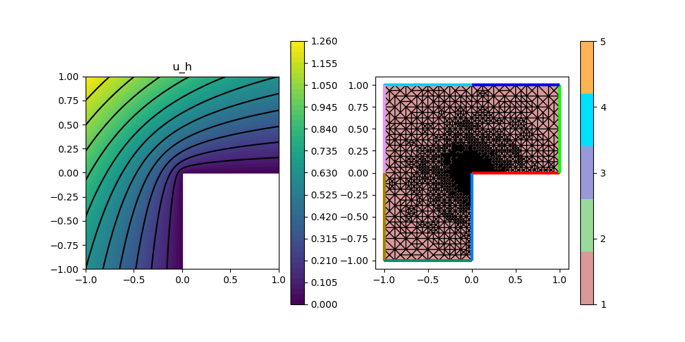
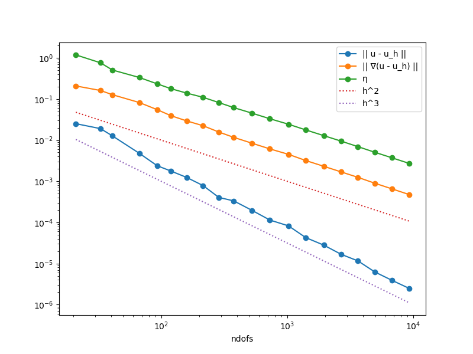

204 : Poisson L-shape Adaptive Mesh Refinement
This example computes the standard-residual error estimator for the $H^1$ error $e = u - u_h$ of some $H^1$-conforming approximation $u_h$ to the solution $u$ of some Poisson problem $-\Delta u = f$ on an L-shaped domain, i.e.
\[\eta^2(u_h) := \sum_{T \in \mathcal{T}} \lvert T \rvert \| f + \Delta u_h \|^2_{L^2(T)} + \sum_{F \in \mathcal{F}} \lvert F \rvert \| [[\nabla u_h \cdot \mathbf{n}]] \|^2_{L^2(F)}\]
This example script showcases the evaluation of 2nd order derivatives like the Laplacian and adaptive mesh refinement.
module Example204_PoissonLshapeAdaptive2D
using GradientRobustMultiPhysics
using ExtendableGrids
# exact solution u for the Poisson problem
function exact_function!(result,x)
result[1] = atan(x[2],x[1])
if result[1] < 0
result[1] += 2*pi
end
result[1] = sin(2*result[1]/3)
result[1] *= (x[1]^2 + x[2]^2)^(1/3)
end
# ... and its gradient
function exact_function_gradient!(result,x)
result[1] = atan(x[2],x[1])
if result[1] < 0
result[1] += 2*pi
end
# du/dy = du/dr * sin(phi) + (1/r) * du/dphi * cos(phi)
result[2] = sin(2*result[1]/3) * sin(result[1]) + cos(2*result[1]/3) * cos(result[1])
result[2] *= (x[1]^2 + x[2]^2)^(-1/6) * 2/3
# du/dx = du/dr * cos(phi) - (1/r) * du/dphi * sin(phi)
result[1] = sin(2*result[1]/3) * cos(result[1]) - cos(2*result[1]/3) * sin(result[1])
result[1] *= (x[1]^2 + x[2]^2)^(-1/6) * 2/3
end
# everything is wrapped in a main function
function main(; verbosity = 0, nlevels = 20, theta = 1//3, order = 2, Plotter = nothing)
# set log level
set_verbosity(verbosity)
# initial grid
xgrid = grid_lshape(Triangle2D)
# choose some finite element
if order == 1
FEType = H1P1{1}
elseif order == 2
FEType = H1P2{1,2}
elseif order == 3
FEType = H1P3{1,2}
else
@error "order has to be 1,2 or 3"
end
# negotiate data functions to the package
user_function = DataFunction(exact_function!, [1,2]; name = "u_exact", dependencies = "X", quadorder = 5)
user_function_gradient = DataFunction(exact_function_gradient!, [2,2]; name = "grad(u_exact)", dependencies = "X", quadorder = 4)
# setup Poisson problem
Problem = PoissonProblem()
add_boundarydata!(Problem, 1, [2,3,4,5,6,7], BestapproxDirichletBoundary; data = user_function)
add_boundarydata!(Problem, 1, [1,8], HomogeneousDirichletBoundary)
# setup exact error evaluations
L2ErrorEvaluator = L2ErrorIntegrator(Float64, user_function, Identity)
H1ErrorEvaluator = L2ErrorIntegrator(Float64, user_function_gradient, Gradient)
# define error estimator
# kernel for jump term : |F| ||[[grad(u_h)*n_F]]||^2_L^2(F)
xFaceVolumes::Array{Float64,1} = xgrid[FaceVolumes]
xFaceNormals::Array{Float64,2} = xgrid[FaceNormals]
xCellVolumes::Array{Float64,1} = xgrid[CellVolumes]
function L2jump_integrand(result, input, item)
result[1] = ((input[1]*xFaceNormals[1,item])^2 + (input[2]*xFaceNormals[2,item])^2) * xFaceVolumes[item]
return nothing
end
# kernel for volume term : |T| * ||f + Laplace(u_h)||^2_L^2(T)
# note: f = 0 here, but integrand can also be made x-dpendent to allow for non-homogeneous rhs
function L2vol_integrand(result, input, item)
result[1] = 0
for j = 1 : length(input)
result[1] += input[j]^2 * xCellVolumes[item]
end
return nothing
end
# ... which generates an action...
eta_jumps_action = Action{Float64}( L2jump_integrand, [1,2]; name = "estimator kernel jumps", dependencies = "I", quadorder = 2)
eta_vol_action = Action{Float64}( L2vol_integrand, [1,2]; name = "estimator kernel volume", dependencies = "I", quadorder = 1)
# ... which is used inside an ItemIntegrator
jumpIntegrator = ItemIntegrator(Float64,ON_IFACES,[Jump(Gradient)],eta_jumps_action; name = "η_F")
volIntegrator = ItemIntegrator(Float64,ON_CELLS,[Laplacian],eta_vol_action; name = "η_T")
# refinement loop
NDofs = zeros(Int, nlevels)
Results = zeros(Float64, nlevels, 3)
Solution = nothing
for level = 1 : nlevels
# create a solution vector and solve the problem
println("------- LEVEL $level")
@time begin
FES = FESpace{FEType}(xgrid)
Solution = FEVector{Float64}("u_h",FES)
solve!(Solution, Problem)
NDofs[level] = length(Solution[1])
println("\t ndof = $(NDofs[level])")
print("@time solver =")
end
# calculate local error estimator contributions
@time begin
xFaceVolumes = xgrid[FaceVolumes]
xFaceNormals = xgrid[FaceNormals]
xCellVolumes = xgrid[CellVolumes]
vol_error = zeros(Float64,1,num_sources(xgrid[CellNodes]))
jump_error = zeros(Float64,1,num_sources(xgrid[FaceNodes]))
evaluate!(vol_error,volIntegrator,Solution[1])
evaluate!(jump_error,jumpIntegrator,Solution[1])
# calculate total estimator
Results[level,3] = sqrt(sum(jump_error) + sum(vol_error))
print("@time η eval =")
end
# calculate exact L2 error, H1 error
@time begin
Results[level,1] = sqrt(evaluate(L2ErrorEvaluator,Solution[1]))
Results[level,2] = sqrt(evaluate(H1ErrorEvaluator,Solution[1]))
print("@time e eval =")
end
if level == nlevels
break;
end
# mesh refinement
@time begin
if theta >= 1
# uniform mesh refinement
xgrid = uniform_refine(xgrid)
else
# adaptive mesh refinement
# compute refinement indicators
nfaces = num_sources(xgrid[FaceNodes])
refinement_indicators::Array{Float64,1} = view(jump_error,1,:)
xFaceCells = xgrid[FaceCells]
cell::Int = 0
for face = 1 : nfaces, k = 1 : 2
cell = xFaceCells[k,face]
if cell > 0
refinement_indicators[face] += vol_error[1,cell]
end
end
# refine by red-green-blue refinement (incl. closuring)
facemarker = bulk_mark(xgrid, refinement_indicators, theta; indicator_AT = ON_FACES)
xgrid = RGB_refine(xgrid, facemarker)
end
print("@time refine =")
end
println("\t η = $(Results[level,3])\n\t e = $(Results[level,2])")
end
# plot
GradientRobustMultiPhysics.plot(xgrid, [Solution[1]], [Identity]; add_grid_plot = true, Plotter = Plotter)
# print/plot convergence history
print_convergencehistory(NDofs, Results; X_to_h = X -> X.^(-1/2), ylabels = ["|| u - u_h ||", "|| ∇(u - u_h) ||", "η"])
plot_convergencehistory(NDofs, Results; add_h_powers = [order,order+1], X_to_h = X -> X.^(-1/2), Plotter = Plotter, ylabels = ["|| u - u_h ||", "|| ∇(u - u_h) ||", "η"])
end
endThis page was generated using Literate.jl.
Default output:
julia> Example204_PoissonLshapeAdaptive2D.main()
------- LEVEL 1
ndof = 21
@time solver = 0.171092 seconds (409.27 k allocations: 23.982 MiB, 14.72% gc time, 5.55% compilation time)
@time η eval = 3.773553 seconds (7.37 M allocations: 434.242 MiB, 3.94% gc time, 99.83% compilation time)
@time e eval = 3.030766 seconds (1.93 M allocations: 123.399 MiB, 1.86% gc time, 99.90% compilation time)
@time refine = 0.117122 seconds (159.07 k allocations: 9.523 MiB, 99.78% compilation time)
η = 1.1809216557030233
e = 0.2076474651624387
------- LEVEL 2
ndof = 33
@time solver = 0.002770 seconds (2.40 k allocations: 240.859 KiB)
@time η eval = 0.000807 seconds (1.37 k allocations: 95.000 KiB)
@time e eval = 0.000760 seconds (1.26 k allocations: 113.641 KiB)
@time refine = 0.000053 seconds (52 allocations: 4.766 KiB)
η = 0.7574690118747248
e = 0.16086233264174035
------- LEVEL 3
ndof = 41
@time solver = 0.002338 seconds (2.44 k allocations: 265.305 KiB)
@time η eval = 0.000719 seconds (1.40 k allocations: 98.688 KiB)
@time e eval = 0.000839 seconds (1.29 k allocations: 119.016 KiB)
@time refine = 0.004105 seconds (97 allocations: 8.297 KiB, 98.01% compilation time)
η = 0.5060512659008009
e = 0.12710035674542716
------- LEVEL 4
ndof = 67
@time solver = 0.002313 seconds (2.65 k allocations: 315.656 KiB)
@time η eval = 0.000743 seconds (1.49 k allocations: 110.078 KiB)
@time e eval = 0.001225 seconds (1.36 k allocations: 135.141 KiB)
@time refine = 0.000062 seconds (65 allocations: 8.344 KiB)
η = 0.3333391179306109
e = 0.0820803030509537
------- LEVEL 5
ndof = 93
@time solver = 0.002397 seconds (2.87 k allocations: 399.102 KiB)
@time η eval = 0.000775 seconds (1.57 k allocations: 121.109 KiB)
@time e eval = 0.001594 seconds (1.43 k allocations: 151.266 KiB)
@time refine = 0.000063 seconds (66 allocations: 10.016 KiB)
η = 0.23308314458993296
e = 0.05500436313527561
------- LEVEL 6
ndof = 119
@time solver = 0.002561 seconds (3.08 k allocations: 509.828 KiB)
@time η eval = 0.000816 seconds (1.66 k allocations: 132.453 KiB)
@time e eval = 0.001936 seconds (1.50 k allocations: 167.391 KiB)
@time refine = 0.000067 seconds (75 allocations: 13.625 KiB)
η = 0.17869532534602417
e = 0.03945622994399559
------- LEVEL 7
ndof = 159
@time solver = 0.003007 seconds (3.54 k allocations: 614.500 KiB)
@time η eval = 0.000958 seconds (1.79 k allocations: 149.297 KiB)
@time e eval = 0.002454 seconds (1.61 k allocations: 191.703 KiB)
@time refine = 0.000074 seconds (80 allocations: 16.859 KiB)
η = 0.13915850782044387
e = 0.029372552786887583
------- LEVEL 8
ndof = 215
@time solver = 0.003483 seconds (4.10 k allocations: 772.320 KiB)
@time η eval = 0.001077 seconds (1.98 k allocations: 173.500 KiB)
@time e eval = 0.003198 seconds (1.77 k allocations: 226.703 KiB)
@time refine = 0.000100 seconds (87 allocations: 22.844 KiB)
η = 0.10982145223347517
e = 0.022390159079847215
------- LEVEL 9
ndof = 287
@time solver = 0.004242 seconds (4.74 k allocations: 963.016 KiB)
@time η eval = 0.001238 seconds (2.22 k allocations: 205.328 KiB)
@time e eval = 0.004203 seconds (1.97 k allocations: 272.391 KiB)
@time refine = 0.000091 seconds (92 allocations: 29.281 KiB)
η = 0.08174488804164001
e = 0.015716863066144327
------- LEVEL 10
ndof = 377
@time solver = 0.005018 seconds (5.31 k allocations: 1.170 MiB)
@time η eval = 0.001523 seconds (2.53 k allocations: 245.906 KiB)
@time e eval = 0.005564 seconds (2.23 k allocations: 331.391 KiB)
@time refine = 0.000119 seconds (110 allocations: 33.438 KiB)
η = 0.061643133234804595
e = 0.011660924169566596
------- LEVEL 11
ndof = 527
@time solver = 0.006652 seconds (6.53 k allocations: 1.554 MiB)
@time η eval = 0.001890 seconds (3.04 k allocations: 312.828 KiB)
@time e eval = 0.007827 seconds (2.67 k allocations: 428.328 KiB)
@time refine = 0.000148 seconds (127 allocations: 54.531 KiB)
η = 0.045131254768195773
e = 0.008394383730370722
------- LEVEL 12
ndof = 729
@time solver = 0.008582 seconds (8.51 k allocations: 2.073 MiB)
@time η eval = 0.002418 seconds (3.84 k allocations: 405.000 KiB)
@time e eval = 0.010685 seconds (3.25 k allocations: 559.953 KiB)
@time refine = 0.000171 seconds (157 allocations: 61.188 KiB)
η = 0.033081738690084767
e = 0.0061174746553588726
------- LEVEL 13
ndof = 1025
@time solver = 0.011348 seconds (11.30 k allocations: 2.778 MiB)
@time η eval = 0.003179 seconds (5.75 k allocations: 552.438 KiB)
@time e eval = 0.014977 seconds (4.12 k allocations: 753.453 KiB)
@time refine = 0.000213 seconds (197 allocations: 87.047 KiB)
η = 0.024323647581148147
e = 0.004508865557953344
------- LEVEL 14
ndof = 1403
@time solver = 0.028920 seconds (15.64 k allocations: 3.820 MiB, 46.50% gc time)
@time η eval = 0.004248 seconds (8.97 k allocations: 752.625 KiB)
@time e eval = 0.020138 seconds (7.48 k allocations: 1.012 MiB)
@time refine = 0.000293 seconds (245 allocations: 117.266 KiB)
η = 0.017721168129910595
e = 0.0031946413430606517
------- LEVEL 15
ndof = 1951
@time solver = 0.020235 seconds (21.63 k allocations: 5.156 MiB)
@time η eval = 0.005651 seconds (13.85 k allocations: 1.024 MiB)
@time e eval = 0.027982 seconds (12.88 k allocations: 1.424 MiB)
@time refine = 0.000364 seconds (323 allocations: 167.438 KiB)
η = 0.01286507905625896
e = 0.0023110894198585708
------- LEVEL 16
ndof = 2685
@time solver = 0.027166 seconds (29.74 k allocations: 6.420 MiB)
@time η eval = 0.007518 seconds (20.39 k allocations: 1.412 MiB)
@time e eval = 0.039314 seconds (20.12 k allocations: 1.976 MiB)
@time refine = 0.000468 seconds (408 allocations: 223.328 KiB)
η = 0.009428615043435638
e = 0.001686587332501176
------- LEVEL 17
ndof = 3647
@time solver = 0.036251 seconds (40.96 k allocations: 8.425 MiB)
@time η eval = 0.010129 seconds (28.94 k allocations: 1.918 MiB)
@time e eval = 0.053514 seconds (29.56 k allocations: 2.696 MiB)
@time refine = 0.000642 seconds (502 allocations: 318.078 KiB)
η = 0.00694215084171859
e = 0.0012444240066276143
------- LEVEL 18
ndof = 4953
@time solver = 0.049716 seconds (55.29 k allocations: 11.202 MiB)
@time η eval = 0.023685 seconds (40.63 k allocations: 2.611 MiB, 41.56% gc time)
@time e eval = 0.071386 seconds (42.48 k allocations: 3.682 MiB)
@time refine = 0.000825 seconds (665 allocations: 425.359 KiB)
η = 0.005073360038187438
e = 0.0008976812517408595
------- LEVEL 19
ndof = 6781
@time solver = 0.068798 seconds (75.32 k allocations: 15.497 MiB)
@time η eval = 0.018688 seconds (56.96 k allocations: 3.579 MiB)
@time e eval = 0.098047 seconds (60.56 k allocations: 5.061 MiB)
@time refine = 0.001142 seconds (848 allocations: 615.906 KiB)
η = 0.0037228221405321894
e = 0.0006539955724163114
------- LEVEL 20
ndof = 9271
@time solver = 0.107607 seconds (104.75 k allocations: 20.985 MiB, 8.76% gc time)
@time η eval = 0.025308 seconds (79.26 k allocations: 4.903 MiB)
@time e eval = 0.133636 seconds (85.28 k allocations: 6.947 MiB)
ndofs | || u - u_h || order | || ∇(u - u_h) || order | η order |
============|=============================|=============================|=============================|
21 | 2.51263e-02 0.000 | 2.07647e-01 0.000 | 1.18092e+00 0.000 |
33 | 1.90247e-02 1.231 | 1.60862e-01 1.130 | 7.57469e-01 1.965 |
41 | 1.26917e-02 3.730 | 1.27100e-01 2.171 | 5.06051e-01 3.716 |
67 | 4.79055e-03 3.968 | 8.20803e-02 1.781 | 3.33339e-01 1.700 |
93 | 2.38377e-03 4.257 | 5.50044e-02 2.441 | 2.33083e-01 2.182 |
119 | 1.78155e-03 2.362 | 3.94562e-02 2.695 | 1.78695e-01 2.156 |
159 | 1.24278e-03 2.486 | 2.93726e-02 2.037 | 1.39159e-01 1.726 |
215 | 7.86008e-04 3.037 | 2.23902e-02 1.799 | 1.09821e-01 1.569 |
287 | 4.04477e-04 4.600 | 1.57169e-02 2.450 | 8.17449e-02 2.044 |
377 | 3.33412e-04 1.417 | 1.16609e-02 2.189 | 6.16431e-02 2.069 |
527 | 1.95675e-04 3.182 | 8.39438e-03 1.963 | 4.51313e-02 1.862 |
729 | 1.14131e-04 3.323 | 6.11747e-03 1.950 | 3.30817e-02 1.914 |
1025 | 8.23682e-05 1.914 | 4.50887e-03 1.791 | 2.43236e-02 1.805 |
1403 | 4.27727e-05 4.175 | 3.19464e-03 2.195 | 1.77212e-02 2.018 |
1951 | 2.80610e-05 2.557 | 2.31109e-03 1.964 | 1.28651e-02 1.942 |
2685 | 1.67382e-05 3.236 | 1.68659e-03 1.973 | 9.42862e-03 1.946 |
3647 | 1.15905e-05 2.400 | 1.24442e-03 1.986 | 6.94215e-03 1.999 |
4953 | 6.26521e-06 4.020 | 8.97681e-04 2.134 | 5.07336e-03 2.049 |
6781 | 3.91776e-06 2.989 | 6.53996e-04 2.016 | 3.72282e-03 1.971 |
9271 | 2.50250e-06 2.866 | 4.76773e-04 2.021 | 2.72507e-03 1.995 | 